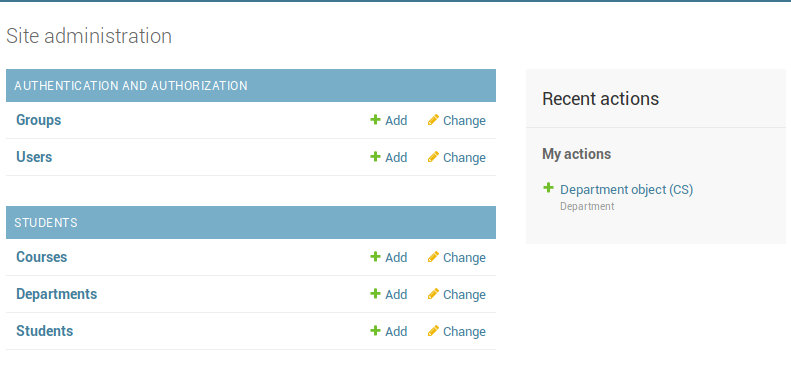
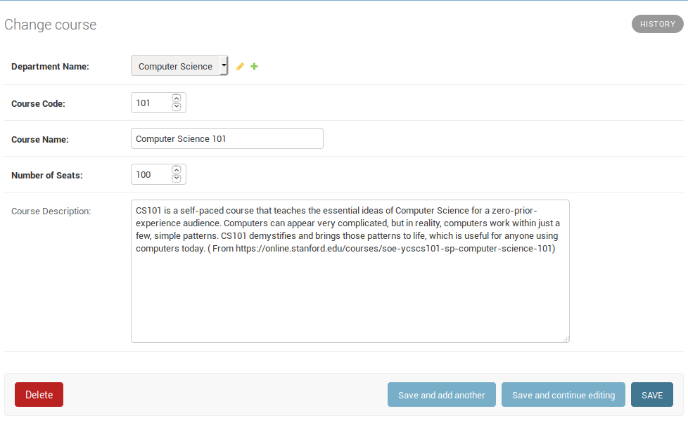
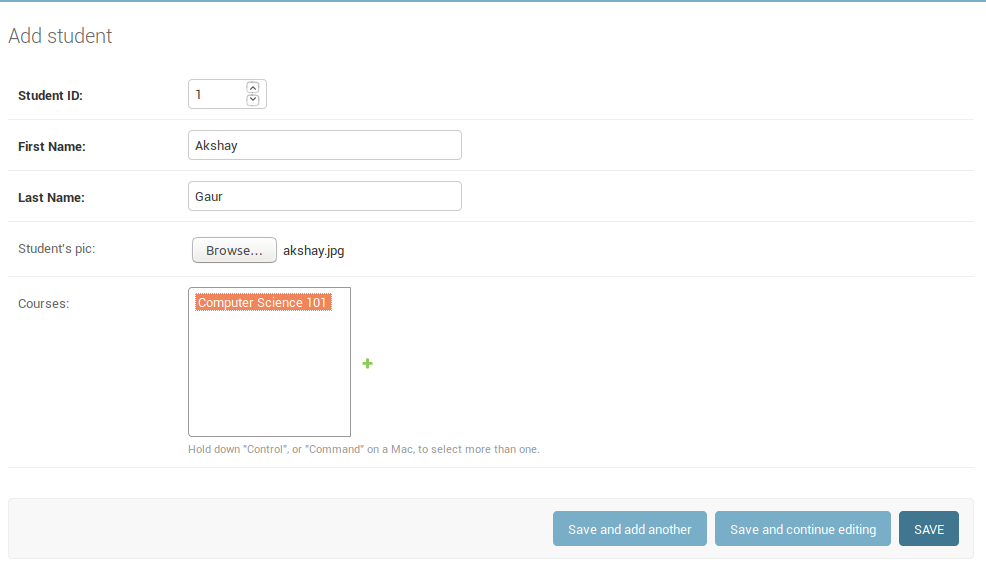

Now, we will create our other models along with department model. So, go back to our students/models.py file and add the following model classes:
1 class Course(models.Model):
2 """
3 This model will store the details about coursespresent in the system.
4 Primary key for this model is a combination of course code and department code (compound key)
5 """
6 class Meta:
7 """
8 Compound key is defined by the keyword unique_together.
9 """
10 db_table = "courses"
11 unique_together = (('department', 'c_code'), )
12
13 department = models.ForeignKey(Department, on_delete=models.CASCADE, verbose_name="Department Code")
14 c_code = models.IntegerField(verbose_name="Course Code")
15 c_name = models.CharField(max_length=200, verbose_name="Course Name")
16 c_seats = models.IntegerField(verbose_name="Number of Seats")
17 c_desc = models.CharField(blank=True, verbose_name="Course Description")
18
19 def __str__(self):
20 """
21 String representation of the object.
22 """
23 return self.d_name
24
25
26 class Student(models.Model):
27 """
28 This model will store students' details.
29 Primary key will be students' id.
30 """
31 class Meta:
32 db_table = "students"
33 ordering = ['s_id']
34
35 s_id = models.IntegerField(primary_key=True, verbose_name="Student ID")
36 s_first_name = models.CharField(max_length=200, verbose_name="First Name")
37 s_last_name = models.CharField(max_length=200, verbose_name="Last Name")
38 s_pic = models.ImageField(upload_to='student_pics', blank=True, verbose_name="Student's pic")
39 course = models.ManyToManyField(Course, blank=True, verbose_name="Courses")
40
41 def __str__(self):
42 """
43 String representation of the student object.
44 """
45 return "{0} {1}".format(self.s_first_name, self.s_last_name)
There are a few thing to unpack here. Lets go through them one by one:
Line 11: When our primary key is a combination of more than one attributes, we define a
compound key. To do so in django, we define it in the Meta class with the keyword
"unique_together".
Line 13: A foreign key dependency is defined as models.ForeignKey
with argument having the model that the foreign key requires.
Line 38: This is an implementation of FileField where the image is uploaded
to the "student_pics" folders. Django requires installation of Pillow to
work with images. So if not installed already, now would be a good time to
do soi ($ pip install pillow).
Line 39: A many-to-many relationship is defined like this in Django.
We also need to define where "student_pics" folder will reside. This is
defined with the help of MEDIA_URL and MEDIA_ROOT concepts. With the help
of these two variables, you can define where to store the media in the project
structure and also, how to form the urls in order to serve the media content.
To define this, go to the end of your settings.py file and add the following:
MEDIA_URL = '/assets/'
MEDIA_ROOT = os.path.join(BASE_DIR, '<any>', '<path>', '<you>', '<want>')
BASE_DIR will be defined in the beginning of your settings.py file and corresponds to:
tutorial/ <---------- This is where BASE_DIR points to
manage.py
tutorial/
__init__.py
settings.py
urls.py
wsgi.py
students/
admin.py
apps.py
__init__.py
migrations/
models.py
tests.py
views.py
I will set it as :
MEDIA_ROOT = os.path.join(BASE_DIR, 'assets', 'media')
This way, I can store all my assets such as images, javascript files, css files(will deal with
them later) in one place. My folder structure will now look like:
tutorial/
assets/
media/
manage.py
tutorial/
__init__.py
settings.py
urls.py
wsgi.py
students/
admin.py
apps.py
__init__.py
migrations/
models.py
tests.py
views.py
At this point, because we added two new models, we need to prepare our migrations
and execute them:
$ python manage.py makemigrations students
$ python manage.py migrate
We also need to register our models so that we can see them in the admin interface, so we will add them in our students/admin.py file:
from django.contrib import admin
# Add this:
from students.models import Department, Course, Student
admin.site.register(Department)
admin.site.register(Course)
admin.site.register(Student)
Your admin site should now look like this:

I went ahead and added an entry each for course and student:


So now that we have saved our student with its pic, where is it? If you
remember, we defined the MEDIA_URL as tutorial/assets/media/. Now, when
we defined our model, we set the "upload_to" parameter in our students'
picture attribute as 'student_pics'. So, our pics will be uploaded to
'tutorial/assets/media/student_pics'. Please take a moment and check
if the picture was uploaded to the correct folder.